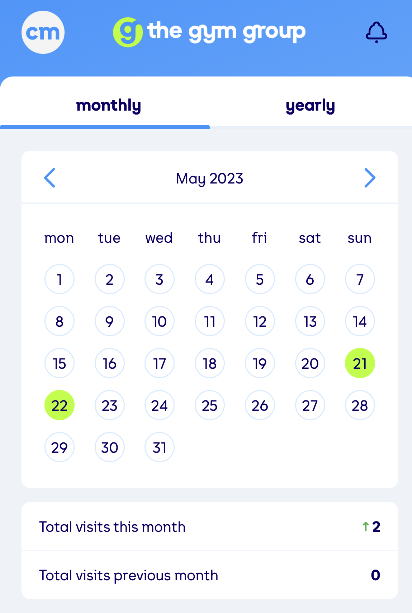

# Load packages for session
pacman::p_load(
lubridate, # handle and manage dates
flextable, # for quick and neat tables
ggthemes, # ggplot2 themes extension
here, # manage file paths
rio, # data import
scales, # for the date label function
tidyverse # data wrangling and viz
)
# set theme for ggplot2
theme_set(
theme_hc(base_size = 18) + # base size
theme(
legend.position = "none", # No legend, unless specified in the plot
legend.title = element_blank(), # No title on the legend
axis.title.y = element_text(angle = 90) # spin y title 90 degrees
)
)Because I can exercise and share a brief story!
Introduction
Welcome to the journey of celebrating 100 days of unwavering dedication to my fitness regimen. Beginning of the year, I embarked on a quest for personal betterment, focusing on gym weight-lifting and outdoor running exercises, with a target of achieving at least 11 kilometers each weekend (fun fact: I exceeded my goal by running approximately 28 kilometers in just about two weekends).
This journey culminated in a staggering 100 days of sheer hard work, unwavering dedication, and a growing passion for all things fitness. In this article, I aim to take you through this transformative 100-day journey, sharing the challenges I overcame, and the invaluable lessons I’ve learned along the way.
The below code below utilize the tribble function to create row-wise tibble of the workout data for the months beggining January 2023 to my celebration month and date.
I also import an excel log (from the gym logs) capturing start and end times for all the gym workouts for the months listed. This will be used to create interesting visualization later on.
# Creating tibble for monthly workout counts
# used to visualize in the latter sections
workout_df <- tribble(
~ month, ~n_workouts,
"2023-01", 14 ,
"2023-02", 13,
"2023-03",05 ,
"2023-04", 0,
"2023-05",02 ,
"2023-06",14 ,
"2023-07", 23,
"2023-08", 15,
"2023-09",0 ,
"2023-10", 14
)
# import gym logs
gym_log_raw <- import(here("posts","celebrate-100-gym-days", "chris-gym_game.xlsx"))
# data processing
workout_df <- workout_df %>%
mutate(
month = ym(month),
n_workouts = as.integer(n_workouts)
)Cleaning gym logs data
# clean the gym log data
gym_log <- gym_log_raw %>%
# create visit date, stat time and end time
mutate(
visit_start_time = str_extract(visit_start, "\\d+:\\d+[aApP][mM]"), # extract time component
visit_end_time = str_extract(visit_end, "\\d+:\\d+[aApP][mM]"), # extract time component
visit_date = str_extract(visit_start, "\\d{2} [A-Za-z]{3} \\d{2}"), # extract date component
visit_date = dmy(visit_date), # convert into ISO date
week_day = wday(visit_date, label = T, abbr = T), # day of the week
month = month(visit_date, label = T), # workout month
duration_mins = as.integer(str_remove(duration, " minutes")), # minutes in the gym
morning_wkout = ifelse(str_detect(visit_start, "am"), "Yes", "No") # Morning workout (Yes/No)
) %>%
# drop the first 3 columns, not neede downstream
select(-c(1:3)) %>%
arrange(visit_date)
gym_log %>% select(-gym_game) %>% head(n = 8) %>%
flextable()visit_start_time | visit_end_time | visit_date | week_day | month | duration_mins | morning_wkout |
|---|---|---|---|---|---|---|
10:47am | 11:40am | 2023-01-02 | Mon | Jan | 53 | Yes |
4:56pm | 6:12pm | 2023-01-03 | Tue | Jan | 76 | No |
5:21pm | 6:37pm | 2023-01-04 | Wed | Jan | 76 | No |
1:49pm | 3:26pm | 2023-01-08 | Sun | Jan | 97 | No |
8:11pm | 9:23pm | 2023-01-09 | Mon | Jan | 72 | No |
8:16pm | 9:28pm | 2023-01-10 | Tue | Jan | 72 | No |
7:45pm | 9:04pm | 2023-01-11 | Wed | Jan | 79 | No |
6:22am | 7:48am | 2023-01-13 | Fri | Jan | 86 | Yes |
My journey commenced with setting realistic and achievable fitness goals, providing me with a clear path and unwavering focus. My objectives included:-
- Enhancing full-body muscle strength
- Build endurance
- Overall fitness
My workout routine was marked by monthly fluctuations, and I visualized these trends to identify both my best and most challenging months.
workout_df %>%
ggplot(aes(x = month, y = n_workouts, group = 1)) +
geom_point(aes(size = n_workouts)) + # size of point depends on number of workouts
geom_line(linewidth = 0.8) +
labs(title = "Trend of monthly gym workouts",
subtitle = "Past 10 months only",
x = "Month", y = "No. of workouts") +
scale_x_date(date_breaks = "month", # break by 1 month interval
date_labels = "%b") # show only month of the yearFigure 1 shows a trend of monthly workouts, with my worst efforts in the months of March and May (I have an excuse though 😂). I reached by best efforts in the month of July with a total of 23 gym works in that monthly only 😰, never managed to replicate that effort, it has now since become my other additional goal, you see how it works now?
workout_df %>%
ggplot(aes(y = n_workouts, x = factor(1))) +
geom_boxplot(width = 0.2) +
labs(title = "The overal picture",
x = "", y = "No. of workouts") +
theme(axis.text.x = element_blank())I averaged 10 workouts per month during the 10 months period (despite registering 0 in April and May) Figure 2. I registered a median of 13 workouts per month, not bad for a beginner though, proud of these numbers to the greatest heights.
Monthly Visual Chart
The cascede images below shows monthly presence in the gym. The light-green highlighted dates represents the days I worked out for that month. July has a good pattern, I love it 🤗

Workout schedule: Structuring Success
A structured workout schedule was instrumental in maintaining consistency. It included various exercises targeting different muscle groups and allocated specific times to each.
# Work out schedule
workout_sched <- tribble(
~ Day, ~ `50 mins`, ~ `30 mins`, ~`10 mins`,
"Monday", "Chest", "Biceps", "Treadmill Run",
"Tuesday", "Back", "Triceps", "Treadmill Run",
"Wednesday", "Legs", "Shoulder", "Treadmill Run",
"Thursday", "Core", "Compound exercises", "Treadmill Run",
"Friday", NA_character_, NA_character_, "Rest day (Not always)",
"Saturday", NA_character_, NA_character_, "Outdoor half-marathon 11 - 13kms")The table below shows the daily work-out schedule, making sure I spend more time on muscles that take long to grow and always end my workout with a 10 mins run on the treadmill. The headers are day of the week and mins allocated to each exercise.
workout_sched %>%
qflextable()Day | 50 mins | 30 mins | 10 mins |
|---|---|---|---|
Monday | Chest | Biceps | Treadmill Run |
Tuesday | Back | Triceps | Treadmill Run |
Wednesday | Legs | Shoulder | Treadmill Run |
Thursday | Core | Compound exercises | Treadmill Run |
Friday | Rest day (Not always) | ||
Saturday | Outdoor half-marathon 11 - 13kms |
As a starting point, I aimed at working out for at least 1hr 30 mins; focusing two muscles a day as shown in Table 1. Friday was not all rest day as can been seen in monthly visual chart - 3, but was mostly a plan to catch up on missed appointment a.k.a punish yourself for missing many sessions the prior month.
Visualizing Progress: Tracking Transformations
Visualizing my workout data unveiled the trends in my workout duration, enabling me to track improvements and shifts in my routine.
Average monthly workout duration
gym_log %>%
group_by(month) %>%
summarise(
avg_dur = mean(duration_mins)
) %>%
ggplot(aes(x = month, y = avg_dur, group = 1)) +
geom_line()+
geom_point() +
labs(
title = "Monthly average workout duration in minutes",
x = "Month",
y = "duration (mins)"
)The month of June was my worst solo effort, but this trend shows the significance of my gym buddy the month of after June and the average stay and working out in the gym that shot up by approximately 38% and almost stabilized. I can only hope for an upward trend going forward.
Trend - best month
The month after getting a workout buddy was the best. All metrics were at their all time best i.e. more days in the gym, more time working out for the days designated; and in fact, the second best monthly average workout duration this year Figure 3. This once again tells the importance of the incoming energy, support, encouragement and accountability from my workout buddy.
# create metrics for dynamic labeling
tot_mins <- gym_log %>% filter(month == "Jul") %>%
select(duration_mins) %>% pluck() %>% sum()
# days worked
days_work <- gym_log %>% filter(month == "Jul") %>% nrow()
gym_log %>%
filter(month == "Jul") %>%
ggplot(aes(x = visit_date, y = duration_mins, group = 1)) +
geom_point()+
geom_line() +
scale_x_date(date_breaks = "2 days", # break by 1 month interval
#date_labels = "%d\n%b",
labels = label_date_short()) + # show only month of the year
labs(x = "Date", y = "duration(mins)",
title = "Trend of best effort, July 2023",
caption = str_glue("Days working out = {days_work}\nTotal mins = {comma(tot_mins)}"))Summary of workout days:Evolution of Dedication
In general, my working out routine greatly improved months following June and this can all be attributed to having a workout buddy. The box plots below paint a picture of a transformation in the process; which can only get better with time. Amidst all the fired up effort, I missed a few days/months; but that’s a story for another day of why that happened.
gym_log %>%
ggplot(aes(x = month, y = duration_mins)) +
geom_boxplot(width = 0.5, outlier.color = "red") +
labs(y = "duration(mins)")Summarizing my monthly workouts using box plots revealed the distribution of my workout durations and provided further insights into my fitness journey Figure 5.
Histogram of workout duration
A histogram of workout duration showcases the diverse nature of my exercise routines, with both short, intense sessions and longer, endurance-based workouts.
I am proud of every value on the x-axis and how many times it occurred on the y-axis. I don’t want to settle on the middle ground but I lik the extremes because they come into play when circumstance prevail.
gym_log %>%
ggplot(aes(x = duration_mins)) +
geom_histogram(fill = "steelblue") +
labs(x = "duration(mins)", y = "Frequency",
title = "Histogram of all-time workout duration",
subtitle = "Jan upto Oct 2023")Conclusion and take aways
This celebration is about a habit I have managed to pick, the growth and the transformation it has brought about.This type of a journey requires accountability, and for that reason, I have a workout buddy Tony Henry who I am accountable to, and the gym app was very crucial in tracking my progress.
Fitness journey comes with challenges, for instance having to wake up in the morning at around 6am to workout while you would rather keep warm and sleep is the hardest choice. Overcoming this type of challenge was key to my success, made me mentally stronger and enabled me to become more resilient.
Listen to your body always, know when to push harder and when to rest. Celebrate every milestone you have achieved, even if it meant you lifted 2.5kg extra on top of your regular weight limit. Celebrations makes you more energetic and looking forward to move up next level the following workout day.
I hope my story inspires you to start your fitness journey or continue the one you already archived. It’s doable, if you put mind to it. Here is to 100 days of hard-work, dedication and determination 🙌🥳.